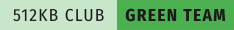
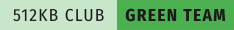

Hello, World!
Hi! My name is Jon Nurminen. Welcome to my corner of the internet.
About me
I live in southern Finland and I'm studying software development in Omnia.
I'm passionate about linux/unix, server administration, networking and systems programming.
On my main laptop I use Void Linux with dwm, and I have experience in distros based on Debian. I like to run internet-facing services with OpenBSD.
You can find my dwm rice here.
I run a homelab with some old workstations, a server and a raspberry pi. You can find more about it here.
 
